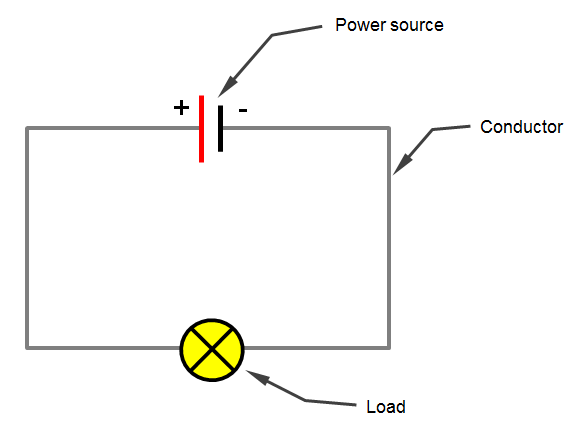

Let's make these electric charges move in an electric circuit!
 From 12 Volt PlanetIf there is electric current.
| Name | Unit | Symbol |
|---|---|---|
| Electric Current (I) | Amps | A |
Electric current is defined by the amount of coulombs that pass through the circuit every second.$$I=\frac{\Delta Q}{\Delta t}$$This means you can calculate the electric capacity (or how much current is being used) with this formula:$$\Delta Q=I\Delta t$$Most alkaline batteries have an electric capacity of 1000 mAh. This means they can deliver an electric current of 1000 mA for one hour.
When we look at atoms flowing through our electric circuit, we see loads of electrons flowing from the negative end of the circuit to the positive end. Eventhough, at an atomic level, this is how it all functions, we'll be defining that electric current always moves from positive to negative, + to -. You can blame the ancient Greeks for this.
Before we derive Ohm's Law, I want to introduce electric flow as a metaphor. Imagine a running tap in your kitchen. The height of the water flow represents the voltage, and the speed of the flow represents the electric current.
From this metaphor it's easy to understand that a higher voltage (a taller water stream) means a higher current (faster tap water) and vice versa. This means that voltage divided by current is a constant. This constant is the resistance (R).
| Name | Unit | Symbol |
|---|---|---|
| Electric Resistance (R) | Ohm | Ω |
To measure amps and volts in a circuit, you can place ammeters and voltmeters (respectively) on the circuit.
If we want to measure the amount of amps to perfect accuracy, we want the voltage to be 0, so the perfect resistance of an ammeter would be 0.
If we want to measure the voltage to perfect accuracy, we want the current to be 0, so the perfect resistance of a voltmeter would be infinity (dividing by zero equals infinity).
This is why a voltmeter must be placed on a parallel circuit, while an ammeter can be placed in a series circuit.
Resistance's proportionality to temperature depends on whether we're talking about conductors or insulators. In conductors, a higher temperature means a higher resistance. In insulators, a higher temperature means a lower resistance. In both cases, the drop or increase in resistance is little to none.
However, scientists have discovered that, in a conductor, resistance drops to near 0 at freezing cold temperatures. This is called superconduction, and it could be a solution for the energy crisis. If superconduction is applied to all electricity in the world, no current would be lost, so you could put a current into a circuit once and it'd stay there (pretty much) forever.
Finally we can derive this formula. Electrical energy is proportional to current, voltage and time. Time is involved here because just multiplying current and voltage would give the same number all the time, even if you've been using your circuit for 3 hours.$$E=UI\Delta t$$Because of Ohm's law, these formulas are also possibilities:$$E=RI^{2}\Delta t$$$$E=\frac{U^{2}}{R}\Delta t$$
We already talked about power (energy per unit of time), so let's derive multiple possible formulas here as well.$$P=\frac{E}{\Delta t}$$$$P=UI$$$$P=RI^{2}$$$$P=\frac{U^{2}}{R}$$Additionally:$$E=P\Delta t$$
If you look at how much energy you're consuming at home, a value is probably denoted in kWh. This is a possible unit for electrical energy, so you could convert it to Joules.$$1 kWh=1⋅10^{3}⋅3600 Ws = 3600000J$$And you can calculate your bills before they arrive...
We already know the difference between series circuits and parallel circuits.
From WikipediaThis is a series circuit.
From BCcampus PressbooksThis is a parallel circuit.
Let's start with a series circuit, and let's go back to our tap water metaphor. A series circuit here is like the water dropping in different little waterfalls. Every waterfall here represents a resistor (which adds resistance to the circuit) on our circuit. The speed of the water at each waterfall is the same. The electric current stays the same in a series circuit, but since the resistance changes, the voltage also changes.
In a series circuit, the total current is equal to the current at every resistor, but the total voltage is equal to the sum of the voltage at every resistor. Thanks to these findings we can derive a formula to calculate the substitution resistance of the entire circuit.$$I=I_{1}=I_{2}=I_{3}$$$$U=U_{1}+U_{2}+U_{3}$$$$R_{S}I=R_{1}I_{1}+R_{2}I_{2}+R_{3}I_{3}$$$$R_{S}=R_{1}+R_{2}+R_{3}$$
Next up is a parallel circuit.
In our metaphor, imagine this as the stream of water splitting in two, and eventually joining back together. As you can tell, the height is the same, so the voltage is the same, but since the resistance changes, the speed is not the same, so the current is not the same.
In a parallel circuit, the total voltage is equal to the voltage at every resistor, but the total current is equal to the sum of the current at every resistor.$$U=U_{1}=U_{2}=U_{3}$$$$I=I_{1}+I_{2}+I_{3}$$$$\frac{U}{R_{S}}=\frac{U_{1}}{R_{1}}+\frac{U_{2}}{R_{2}}+\frac{U_{3}}{R_{3}}$$$$\frac{1}{R_{S}}=\frac{1}{R_{1}}+\frac{1}{R_{2}}+\frac{1}{R_{3}}$$
Pouillet's law says something about the proportionality between resistance, length, cross-sectional area and the material of a circuit.$$R\approx l$$$$R\approx \frac{1}{A}$$$$R\approx material$$This all makes sense. The longer the conductor, the higher the resistance. The bigger its cross-sectional area, the more current can flow through, the lower the resistance. It also depends on the material of the conductor. The constant of proportionality is the electric resistivity of the material.$$R=ρ\frac{l}{A}$$
| Name | Symbol | Value |
|---|---|---|
| Electric Resistivity | ρ | Material-specific (Ω*m) |